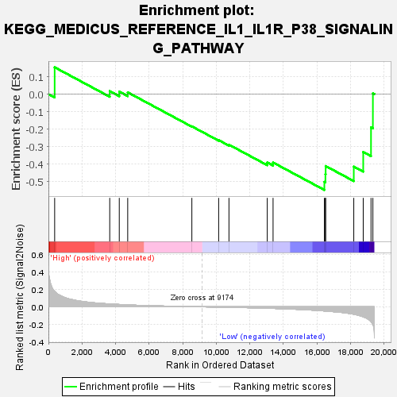
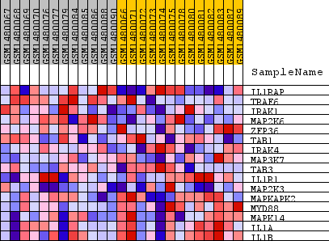
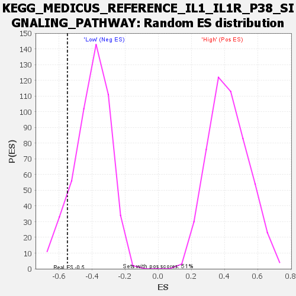

| Dataset | WG6v3.MRPL3.cls#High_versus_Low.MRPL3.cls#High_versus_Low_repos |
| Phenotype | MRPL3.cls#High_versus_Low_repos |
| Upregulated in class | Low |
| GeneSet | KEGG_MEDICUS_REFERENCE_IL1_IL1R_P38_SIGNALING_PATHWAY |
| Enrichment Score (ES) | -0.5489333 |
| Normalized Enrichment Score (NES) | -1.3716941 |
| Nominal p-value | 0.101626016 |
| FDR q-value | 1.0 |
| FWER p-Value | 1.0 |

| SYMBOL | TITLE | RANK IN GENE LIST | RANK METRIC SCORE | RUNNING ES | CORE ENRICHMENT | |
|---|---|---|---|---|---|---|
| 1 | IL1RAP | IL1RAP | 371 | 0.175 | 0.1538 | No |
| 2 | TRAF6 | TRAF6 | 3653 | 0.033 | 0.0172 | No |
| 3 | IRAK1 | IRAK1 | 4222 | 0.027 | 0.0145 | No |
| 4 | MAP2K6 | MAP2K6 | 4724 | 0.022 | 0.0102 | No |
| 5 | ZFP36 | ZFP36 | 8547 | 0.002 | -0.1845 | No |
| 6 | TAB1 | TAB1 | 10144 | -0.003 | -0.2635 | No |
| 7 | IRAK4 | IRAK4 | 10758 | -0.006 | -0.2895 | No |
| 8 | MAP3K7 | MAP3K7 | 13040 | -0.016 | -0.3914 | No |
| 9 | TAB3 | TAB3 | 13386 | -0.018 | -0.3915 | No |
| 10 | IL1R1 | IL1R1 | 16443 | -0.047 | -0.5026 | Yes |
| 11 | MAP2K3 | MAP2K3 | 16506 | -0.048 | -0.4585 | Yes |
| 12 | MAPKAPK2 | MAPKAPK2 | 16520 | -0.048 | -0.4117 | Yes |
| 13 | MYD88 | MYD88 | 18196 | -0.084 | -0.4150 | Yes |
| 14 | MAPK14 | MAPK14 | 18759 | -0.114 | -0.3314 | Yes |
| 15 | IL1A | IL1A | 19223 | -0.167 | -0.1904 | Yes |
| 16 | IL1B | IL1B | 19335 | -0.203 | 0.0045 | Yes |

